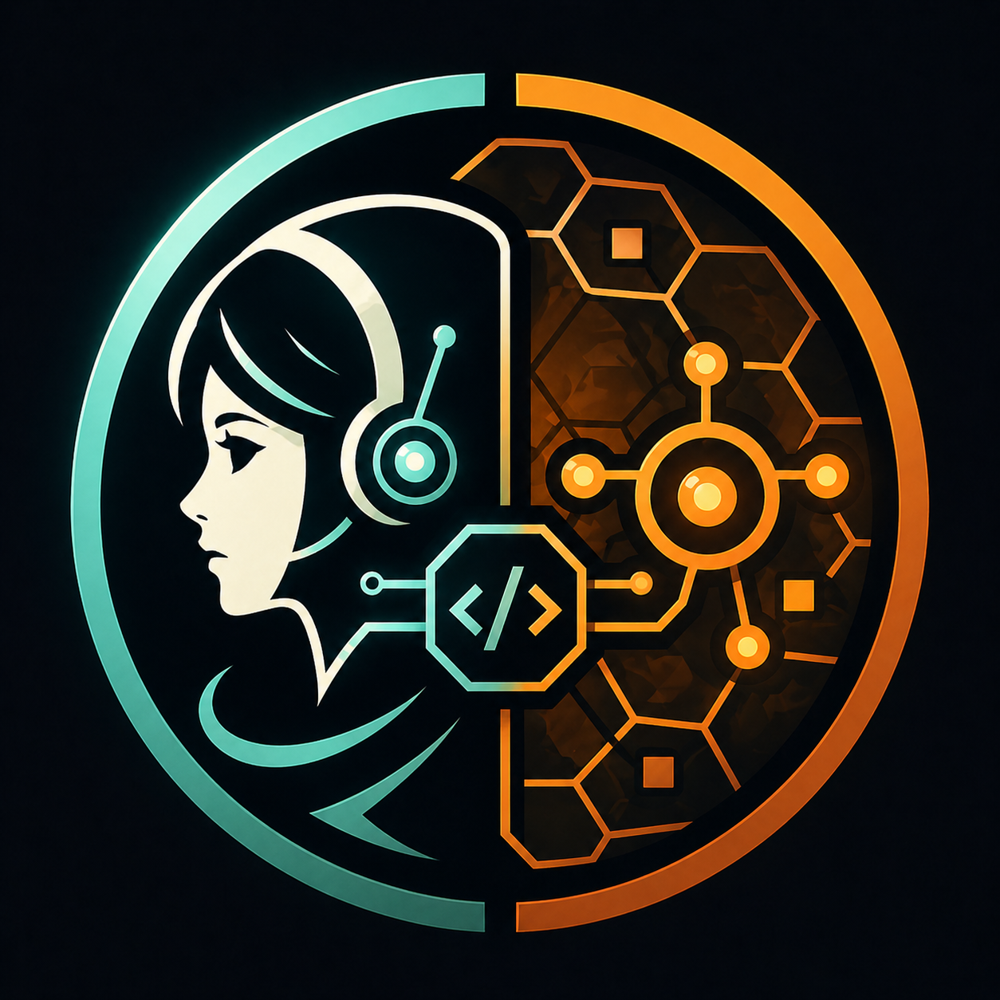

地盘 / Territory
Owned roomsController levelRoom gain
领土、RCL、房间增减；缺失项在 SQLite 中标为 not instrumented。
用真实游戏 KPI 驱动 bot 能力、策略开发、基建门禁和发版节奏。
Project · 长期运行的 Screeps: World AI / 自动化运营项目。
Links · https://github.com/lanyusea/screeps · https://screeps.com/
Target · Official MMO shardX/E48S28 · 地盘 > 资源 > 击杀。

领土、RCL、房间增减；缺失项在 SQLite 中标为 not instrumented。
存储、采集、携带能量；来自 runtime summary / KPI reducer。
敌人击杀、hostile、己方损失；事件 reducer 未覆盖时保持显式缺失。
目标真实游戏结果驱动 roadmap / task / release
下个点Keep open: accept first 12h Gameplay Evolution Review output, convert finding into #29/#61 Codex-ready KPI/gameplay task, and continue #62/#63 follow-ups.
目标先拿下并守住更大版图
下个点owned/reserved/room gain/RCL KPI
目标把占地转换成能量、矿物、物流规模
下个点Merge PR #68 after elapsed gate and re-checks; next #29 slice wires scripts/screeps_runtime_kpi_artifact_bridge.py into 12h Gameplay Evolution Review/roadmap KPI prompts and ensures real #runtime-summary console lines are persisted.
目标防御/进攻服务于领土和经济控制
下个点Define trigger matrix, report template, and no-alert/simulated dry-run before automatic emergency response.
目标自动化系统健康只在阻塞时压过游戏目标
下个点Done/watch-only. Routine P0 monitor continues; reopen/escalate only if future stale next_run_at, missing output, delivery error, or workdir serialization risk appears.
目标私服验证 / release gate / official MMO
下个点Run clean ignored-workdir private smoke harness and attach/report redacted evidence.
Queue bounded Codex/test slice after the current KPI telemetry bridge (#29) or when a worker slot is free; do not leave unblocked bot-capability coverage idle.
Queue bounded Codex/test slice after the current KPI telemetry bridge (#29) or when a worker slot is free; do not leave unblocked bot-capability coverage idle.
Define trigger matrix, report template, and no-alert/simulated dry-run before automatic emergency response.
Keep open: accept first 12h Gameplay Evolution Review output, convert finding into #29/#61 Codex-ready KPI/gameplay task, and continue #62/#63 follow-ups.
Merge PR #68 after elapsed gate and re-checks; next #29 slice wires scripts/screeps_runtime_kpi_artifact_bridge.py into 12h Gameplay Evolution Review/roadmap KPI prompts and ensures real #runtime-summary console lines are persisted.
Do not deploy until Phase D private-smoke gate and monitor proof are complete, unless owner explicitly overrides.
Update release docs/checklist so every gameplay release records expected KPI movement and post-release monitor verification.
Done/watch-only. Routine P0 monitor continues; reopen/escalate only if future stale next_run_at, missing output, delivery error, or workdir serialization risk appears.
Review/merge PR #45; then configure main branch protection/ruleset to require PRs and status check 'Verify prod TypeScript, Jest, and bundle'.
Done. Main fast-forwarded to 1f41670; continue #29 reducer/renderer/reporting slice using the bridge.